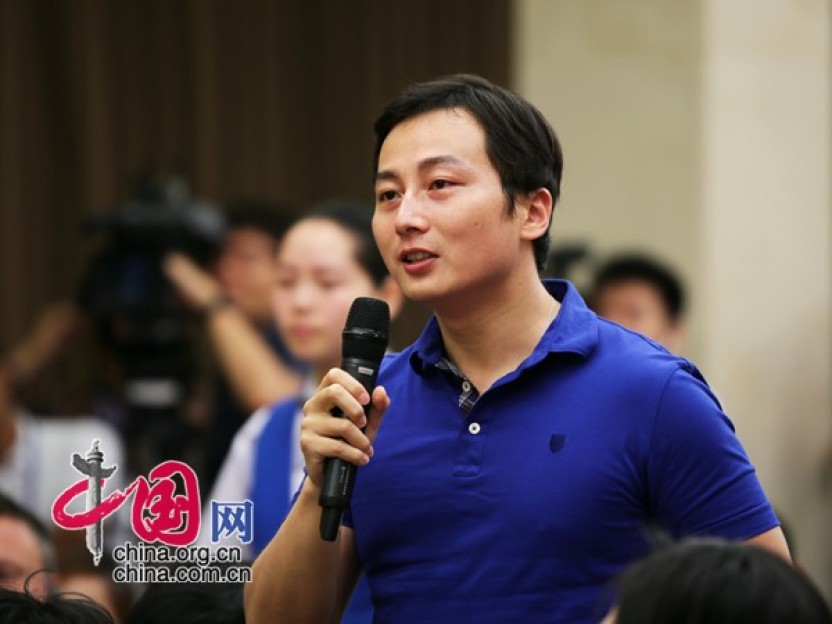

盒子模型
彈性盒子

如果有人想利用这个所谓“强制解决争端程序”提出申请的话，仲裁庭也应该按照公约的有关条款、有关规定进行审理，他要考虑第280条、第281条，也就是说要首先考虑当事国是不是就解决争端达成协议了。中国政府一直认为，中菲之间的协议明明白白地放在那儿，有很多声明、很多条约放在那，中菲之间是达成了协议的，是通过谈判解决争议，仲裁庭无视这些中菲协议，没有有效适用公约第280条、第281条。仲裁庭滥用了公约的第288条，即“即使你遇到了一个所谓涉及公约的解释和适用的争议，仲裁庭也应该去查清当事国是不是就解释适用的问题进行过讨论”。
【刘振民：仲裁庭滥用公约、滥用权力】刘振民：如果有人想利用这个所谓“强制解决争端程序”提出申请的话，仲裁庭也应该按照公约的有关条款、有关规定进行审理，他要考虑第280条、第281条，也就是说要首先考虑当事国是不是就解决争端达成协议了。中国政府一直认为，中菲之间的协议明明白白地放在那儿，有很多声明、很多条约放在那，中菲之间是达成了协议的，是通过谈判解决争议，仲裁庭无视这些中菲协议，没有有效适用公约第280条、第281条。仲裁庭滥用了公约的第288条，即“即使你遇到了一个所谓涉及公约的解释和适用的争议，仲裁庭也应该去查清当事国是不是就解释适用的问题进行过讨论”。